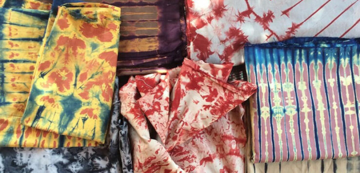

Site de teinturerie de Boussé
Les teintureries de Boussé sont un site artisanal remarquable situé dans la province du Kourwéogo, au Burkina Faso. Elles sont connues pour leurs techniques traditionnelles de teinture des tissus, qui utilisent des méthodes ancestrales et des colorants naturels. Ce savoir-faire est transmis de génération en génération et joue un rôle important dans l'économie locale.Les artisans de Boussé produisent des tissus aux motifs vibrants et uniques, souvent utilisés pour confectionner des vêtements et des accessoires. C'est un lieu fascinant pour découvrir l'artisanat burkinabé et observer les artisans à l'œuvre.
BOUSSE : un lieu à visiter absolument !